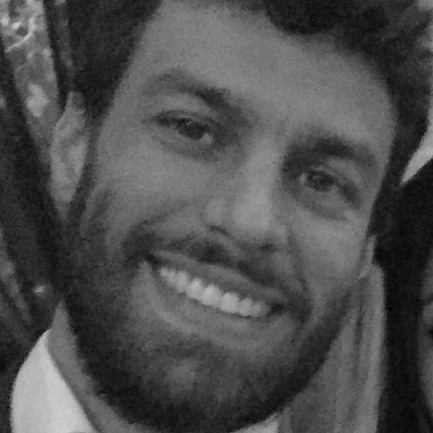

José Carlos Ávila Arruda

Sobre
Formado em Desenho Industrial pela URFJ | Projetista | Web Designer
Estudante do Curso de Programação TRYBE | Futuro Sucesso como Programador
Nascido no Rio de Janeiro mas atualmente moro em Curitiba/PR.
Já morei na Califórnia/EUA onde estudei e trabalhei por 4 meses para aprimorar meu inglês.
Redes Sociais
Habilidades que mais me orgulho
- Proativo
- Empatia
- Empenhado
Conhecimentos
- Inglês
- HTML
- CSS
- Python
- CSharp